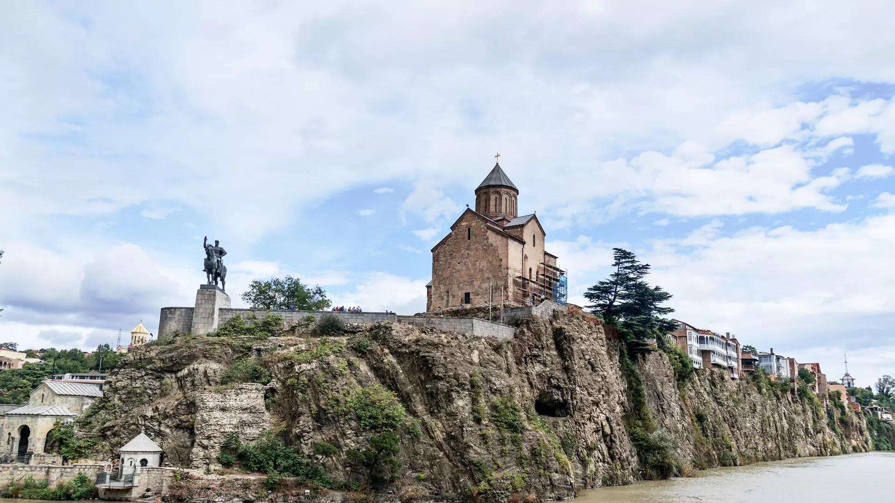
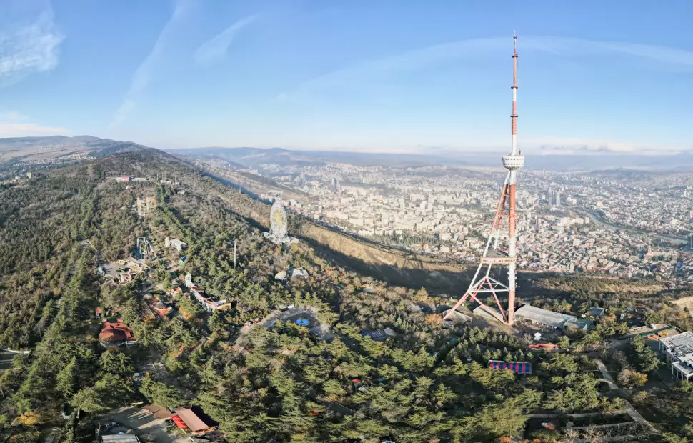
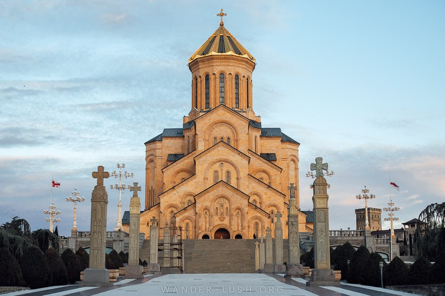

მთავარი ტურისტული უბანი ქალაქის ისტორიული ნაწილი - „ძველი თბილისია“, რომელიც ადრეული შუა საუკუნეებიდან შენდებოდა. ეს ტერიტორია, დაახლოებით, 2 კვადრატულ კილომეტრს მოიცავს და აქ თავმოყრილია ის ღირსშესანიშნაობები, რომლებიც აუცილებლად უნდა ნახო.თბილისის ნებისმიერ სავიზიტო ბარათზე შეგხვდება კლდეზე აშენებული დიდებული ტაძრის ფოტო. ეს მეტეხის ტაძარია - თბილისის ერთ-ერთი ყველაზე მნიშვნელოვანი ძეგლი. ტაძრის ეზოში ამ ტაძრის თავდაპირველი ამშენებლისა და თბილისის დამაარსებელი მეფის - ვახტანგ გორგასლის მონუმენტი დგას. თუ მეფესთან ერთად მეტეხის ტაძრის ეზოდან გადმოიხედავ, „ძველ თბილისს“ ხელისგულზე დაინახავ.
თბილისში ბევრია ისეთი ადგილი, საიდანაც ქალაქს გადმოხედავ და ულამაზესი ხედებით დატკბობას შეძლებ. ყველაზე მაღალი წერტილი კი მთაწმინდაა. სიმწვანეში ჩაფლულ მთაწმინდის პარკში გახსნილია რესტორნები და კაფეები, მოწყობილია ატრაქციონები და დასასვენებელი ადგილები; მთაწმინდაზე ასვლას სამანქანო გზითაც შეძლებ და ფუნიკულიორითაც - ეს რელსებიანი საბაგირო თბილისის კიდევ ერთი ღირსშესანიშნაობაა.
ქალაქის მთავარი არტერია რუსთაველის გამზირია, რომლის სიგრძე 1,5 კმ-ია. აქ ერთმანეთის გვერდით უნიკალური ისტორიული შენობები დგას: საქართველოს პარლამენტი, ოპერის თეატრი, ეროვნული გალერეა, რუსთაველის თეატრი, თანამედროვე ხელოვნების მუზეუმი, ეროვნული ბიბლიოთეკა და ქაშვეთის ეკლესია. გამზირზე არის მაღაზიები, კაფეები და გამწვანებული სკვერები.
თბილისში არაერთი შენობა და ძეგლია, რომელიც ქალაქის სიმბოლოდ მიიჩნევა - წმინდა სამების ტაძარი, ნარიყალას ციხესიმაგრე, თანამედროვე „მშვიდობის ხიდი“ მტკვარზე, იუსტიციის სასახლე, პრეზიდენტის სასახლე, ასევე მონუმენტური ქანდაკებები: ქართლის დედა, მეფე ვახტანგ გორგასალი და წმინდა გიორგი, რომელიც ქალაქის მთავარ მოედანზე დგას.
თბილისის შედარებით ახალ უბნებში კი სულ სხვა რიტმია - აქ მდებარე უნივერსიტეტებში, ბიზნესცენტრებში, თანამედროვე სავაჭრო ცენტრებში, გასართობ პარკებში, რესტორნებსა და ღამის კლუბებში XXI საუკუნის ცხოვრება დუღს.
| რაიონი | სასტუმრო | პარკთან ახლოს | აქვს პარკინგი |
|---|---|---|---|
| ძველი თბილისი | Stamba Hotel | ✔ | ✖ |
| Rooms Hotel Tbilisi | ✔ | ✖ | |
| Hotel Ambasadori | ✔ | ✔ | |
| Hotel Tbilisi Inn | ✖ | ✔ | |
| Gvino Minda Hotel | ✔ | ✖ | |
| Hotel Khokhobi Old Tbilisi | ✔ | ✖ | |
| Hotel Tbilisi Tower | ✖ | ✔ | |
| Vera Boutique Hotel | ✔ | ✖ | |
| ვაკე-საბურთალო | Boutique Hotel 27 | ✔ | ✖ |
| Hotel British House | ✔ | ✖ | |
| ZP Palace Hotel | ✔ | ✔ | |
| მთაწმინდა-ვერა | Hotel Tbilisi Tower | ✔ | ✔ |
| Botique Hotel 27 | ✔ | ✔ | |
| Shota Rustaveli Botique Hotel | ✔ | ✔ | |
| Lota Hotel Tbilisi | ✔ | ✔ | |
| Vera Botique Hotel | ✔ | ✔ |